― イベント報告 ―
-
■【猪風来講演会】生命と魂のデザイン―日本の古縄文アートから現代縄文アート
【日 時】２０１７年１月２２日（日）
【会 場】岡山県立美術館ホール -
■第２３回 秋の縄文野焼き祭り（平成２８年度）
【開催日】２０１６年１０月９日（日） -
■ARTs of JOMON in DENVER
【期 間】２０１５年９月１日～１１月３０日
【会 場】アメリカ コロラド州 デンバー国際空港 -
■アメリカでの縄文アート展開
（ARTs of JOMON in DENVER に先駆けて） -
■開館10周年記念 ARTs of JOMON in 新見 －現代縄文アートの世界－
【期 間】２０１５年６月１８日（木）～６月２８日（日）
【会 場】新見市文化交流館まなび広場にいみ小ホール -
■福山で猪風来講演会！
【開催日】２０１５年３月２２日（日）
【会 場】福山市市民参画センター（広島県福山市本町１－３５） -
■東京町田ひなた村に“縄文の炎”たちのぼる
【開催日】２０１５年２月２８日（土）
【会 場】東京都町田市青少年施設ひなた村 -
■芸術新潮 現代の縄文土器を野で焼く『猪風来の豊饒世界』
【掲載号】「芸術新潮」２０１４年７月号 -
■日本初の快挙！ 国宝「中空土偶」漆塗装技法と縄文ベンガラ技法の解明
―“縄文の赤”の美をはじめて再現―
【函館市縄文文化交流センターの公式ページで論文公開】
【研究成果の公開展示】２０１４年５月２０日（火）～６月８日（日）

|
講演では、猪風来美術館の国内外での活動をはじめとする現代縄文アートの潮流の紹介から、猪風来の縄文
一筋40年の創作体験にもとづく縄文スピリットの開眼、そして文様造形の解読から縄文の“心と技”と“知の体系”
について語られ、約百名の聴講者が熱心に聞き入っておりました。
聴講者からは「新鮮で衝撃的だった」「これまで弥生時代のことしか知らなかったが、縄文について今日
講演で聴いて目から鱗が落ちる思いだった」「私も土器作りをしてみたいと思った」といった感想が寄せら
れました。
今回の講演会は岡山県博物館協議会25周年記念として企画されたものであり、岡山県を中心として西日本
での縄文芸術・文化への関心の高まりを感じるものとなりました。
ご来場のみなさん、スタッフのみなさん、誠にありがとうございました。
=∴=∵=∴=∵=∴=∵=∴=∵=∴=∵=∴=∵=∴=∵=∴=∵=∴=∵=∴=∵=∴=∵=∴=∵=∴=∵=∴=
主催：岡山県博物館協議会（℡086-225-4800） ／ 共催：岡山県，公益財団法人岡山県郷土文化財団
発行：猪風来美術館（℡0867-75-2444 〒719-2552 岡山県新見市法曽609 Website: http://www.ifurai.jp）

|
| 【生命と魂のデザイン―日本の古縄文アートから現代縄文アート チラシ】 →PDF版を開く |
| 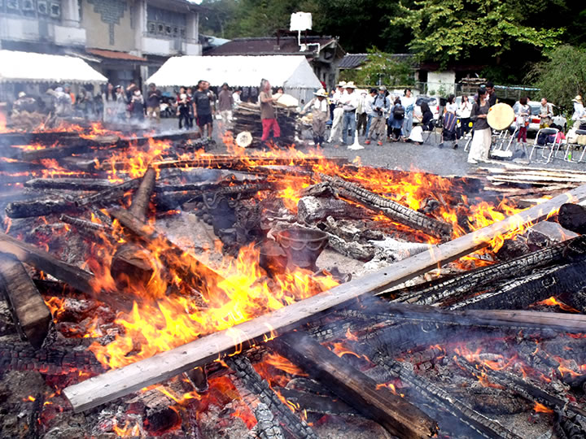 |
| （画像をクリックで拡大します） |
「第23回秋の縄文野焼き祭り 縄文ロード～土器が結ぶ世界への道」が開催されました。
前夜に降った激しい雨が夜半過ぎにピタリとやみ、今日の縄文野焼きの火入れに立ち会おうとする人たちが
朝早くから集まってきました。
７時頃から火おこしして点火。
白い煙がスーッと立ち昇り、小さな赤い火がすぐに勢いよく燃え出して今日の祭りの開始を告げます。
=∴=∵=∴=∵=∴=∵=∴=∵=∴=∵=∴=∵=∴=∵=∴=∵=∴=∵=∴=∵=∴=∵=∴=∵=∴=∵=∴=
世界最古級の土器文化『縄文』は1万5千年以上前の日本列島に生まれ、造形美と豊かな精神性を花開かせました。
やがて土器文化は東アジアから世界各地へ伝播します。
昨年８月に猪風来・村上原野が渡米した際、アメリカ先住民族であり母なる大地に生きる平和の民・ホピ族との
交流が実現しています。
独自の土器野焼き文化をもつホピ族とは強く縄文ロードでつながり、ホピの心は縄文スピリットと通底する
という実感を深めました。
その時お会いしたルービン・サウフキー氏はホピ族の銀細工師であり、ホピ族のメッセンジャーでもあります。
今回、秋の縄文野焼き祭りに参加・交流してくださることになり、ホピ×縄文のスピリットがこの場に素晴ら
しいインスピレーションを与えてくれるという期待に皆ワクワクしています。

|
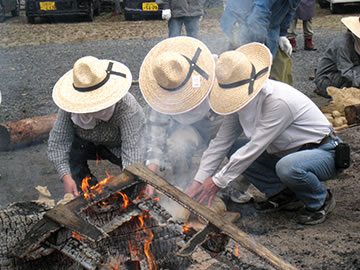 |
| （画像をクリックで拡大します） | |
=∴=∵=∴=∵=∴=∵=∴=∵=∴=∵=∴=∵=∴=∵=∴=∵=∴=∵=∴=∵=∴=∵=∴=∵=∴=∵=∴=
今回焼き上げるのは陶芸教室生を中心に法曽焼同好会、猪風来や村上原野の作品約150点以上。
春の「女たちの縄文野焼き」挑戦に引き続いて 女たちだけで取り組むひとつの野炉を受け持ちました。
合わせて2つの野炉の周りに作品を並べてあぶり焼きを開始。
| 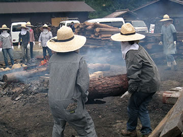 | 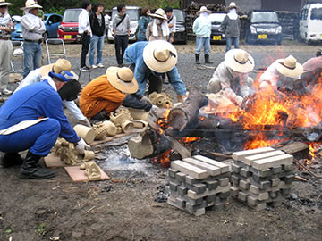 |

|

|
| （画像をクリックで拡大します） | |
文様豊かな縄文土器や可愛らしい土偶鈴、縄文風ペッカリーや土面など、まんべんなく火にあぶられて徐々に
熱くなっていきます。
そして頃合いをみて野炉の真ん中に作品を入れます。

|

|

|
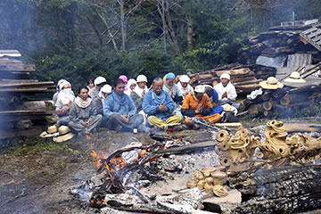 |
| （画像をクリックで拡大します） | |
=∴=∵=∴=∵=∴=∵=∴=∵=∴=∵=∴=∵=∴=∵=∴=∵=∴=∵=∴=∵=∴=∵=∴=∵=∴=∵=∴=
火床に安置された作品を囲んで、太い木や材木をきらさずに焚き続け、徐々にあがる火勢とともに刻々と
土器の色が変化してゆきます。
風が炎に勢いをつけ、さらに太陽の熱の加勢も得て、火のエネルギーが作品の中に蓄積します。
| 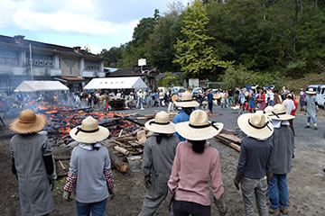 | 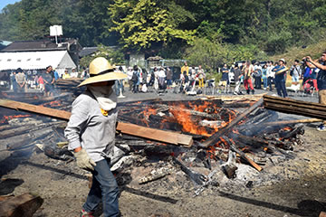 |
| 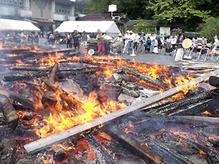 | 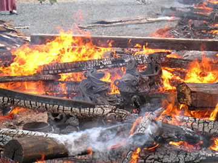 |

|
|
| （画像をクリックで拡大します） | |
=∴=∵=∴=∵=∴=∵=∴=∵=∴=∵=∴=∵=∴=∵=∴=∵=∴=∵=∴=∵=∴=∵=∴=∵=∴=∵=∴=
スタッフも炎の舞う野炉で火の粉を浴びながら必死に薪を積みます。
やがて生れ出ようとする命の誕生を待ち構えています。
| 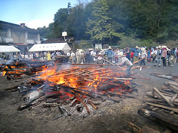 |

|

|
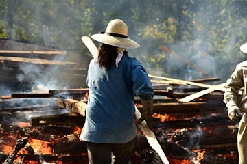 |
| （画像をクリックで拡大します） | |
そして近づくクライマックス。
炎が赤く天に昇る時、火のパワーを宿した新しい命の誕生！
感動の一瞬です。
| 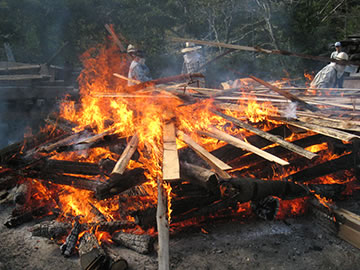 |

|
| （画像をクリックで拡大します） | |
=∴=∵=∴=∵=∴=∵=∴=∵=∴=∵=∴=∵=∴=∵=∴=∵=∴=∵=∴=∵=∴=∵=∴=∵=∴=∵=∴=
今回、岡山・倉敷・総社・矢掛町などの岡山県内からはもちろん、遠く新潟、東京や千葉、大阪、鳥取、広島、
香川などから250人以上参加してくれました。
これまでの活動の繋がりで縄文に惹かれて集まった方々はもちろん、今回は熱心なホピ族ファンも新たに参集。
| 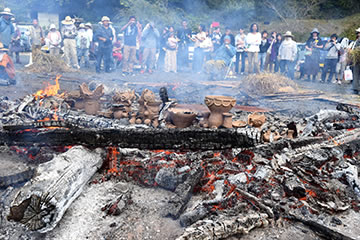 | |

|

|
| 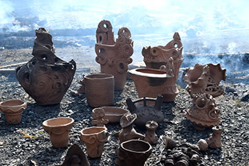 |

|
| （画像をクリックで拡大します） | |
また縄文の学術的・文化的研究として東京大学の先生と院生など、岡山大学の先生や学生たち、広島県三次市
の県立歴史民俗資料館の方々も、縄文野焼きの学びの場として見学や実践体験をしました。
| 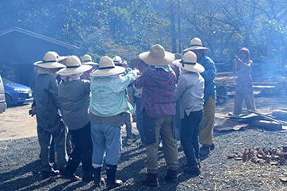 |

|
| （画像をクリックで拡大します） | |
=∴=∵=∴=∵=∴=∵=∴=∵=∴=∵=∴=∵=∴=∵=∴=∵=∴=∵=∴=∵=∴=∵=∴=∵=∴=∵=∴=
《縄文野焼き大賞》
焼き上がった作品の中から、特に縄文造形の素晴らしさや独創性に優れ、また縄文の心あふれる作品を対象
に「縄文野焼き大賞」など4賞を選考・表彰いたしました。
受賞作は12月から当館に展示いたします。
●受賞者（敬称略）
◆縄文野焼き大賞 ………………… 小野真由美（岡山市） 縄文土器
◆新見市教育委員会教育長賞 …… 森谷陽希（井倉小２年） 縄文土偶
◆法曽焼同好会会長賞 …………… 大岡千尋（岡山市） 縄文土偶
◆猪風来美術館館長賞 …………… 中山裕那（岡山市） 縄文土器

|

|
| 【縄文野焼き大賞】 | 【新見市教育委員会教育長賞】 |

|
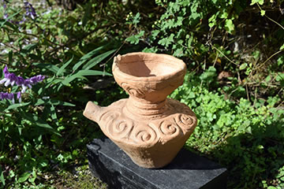 |
| 【法曽焼同好会会長賞】 | 【猪風来美術館館長賞】 |
| （画像をクリックで拡大します） | |
=∴=∵=∴=∵=∴=∵=∴=∵=∴=∵=∴=∵=∴=∵=∴=∵=∴=∵=∴=∵=∴=∵=∴=∵=∴=∵=∴=
《縄文体験コーナー》
～縄文土器で煮炊きをしてみよう！～
土器汁は格別のおいしさです。
２個の土器の周りに薪をくべて、野菜やキノコとタカキビ団子の縄文汁を作りました。
たくさんの女性たちが手伝いしながら、土器の保温力や料理の魅力に感心しきり。
「私も煮炊き用土器が欲しい」「作りたい」の声が……。
みんなでつくろう縄文土器！ みんなで食べよう縄文鍋！
| 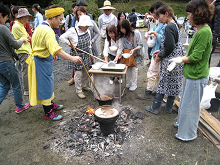 |
| （画像をクリックで拡大します） |
～粘土でつくろう～
思い思いの形を作り、それぞれの工夫で縄目を転がしたり押し付けたり。
粘土を触っているだけで楽しい気分。
参加者の作品は、11月中に野焼きして焼き上げる予定です。
～粘石で勾玉をつくろう～
白・黒・ピンクのやわらかな滑石を紙やすりなどでこすって勾玉の形にします。
大人も子供もひたすら削り続けてやっと思うような形になったかな？
勾玉ペンダントのできあがりです！
| 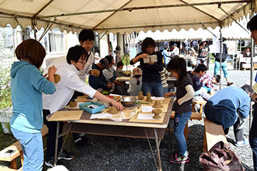 | 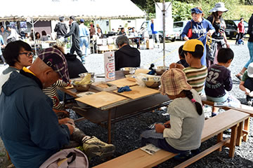 |
| （画像をクリックで拡大します） | |
=∴=∵=∴=∵=∴=∵=∴=∵=∴=∵=∴=∵=∴=∵=∴=∵=∴=∵=∴=∵=∴=∵=∴=∵=∴=∵=∴=
《販売コーナー》
地元法曽焼同好会女性会員の皆さんが大奮闘。
昼食にはうどん・猪カレーうどん・猪カレーライスなどが提供されました。
飲み物・お菓子や地元特産品法曽茶・法曽焼、ピオーネの販売もありました。

|

|
| （画像をクリックで拡大します） | |
=∴=∵=∴=∵=∴=∵=∴=∵=∴=∵=∴=∵=∴=∵=∴=∵=∴=∵=∴=∵=∴=∵=∴=∵=∴=∵=∴=
《米国先住民ホピ族 ルービン・サフスキー氏来る！》
～縄文野焼きの炎とイーグルダンス～
太陽に祈りをとどける儀式「イーグルダンス」は縄文野焼きカムイノミに引き続いて行われました。
鷲の羽をまとい「イーグルのパワーをもつホピの精霊の姿」になったルービン氏が現れ、太鼓とホピの歌声の
調べの中で舞い始めました。
羽飾りのついた腕を大きく羽ばたかせながら大地を力強く踏みしめる独特のリズム、両腕を前に差し出し羽を
閉じ、その羽を太陽の方向に差し上げる仕草などを繰り返しながら、祈りが太陽まで運ばれるのです。
不思議なことにそれまで雲が覆っていた空に、日の光が差し始めました。
祈りがとどいて縄文野焼きへ太陽の祝福がもたらされたのでしょうか。
ルービン氏はその後広場に輪になった人たちをまわって両腕の羽で触れ人々の思いを羽にのせて太陽に運んで
くれました。
|
（撮影の許されない祈りの儀式のため、写真はありません） |
=∴=∵=∴=∵=∴=∵=∴=∵=∴=∵=∴=∵=∴=∵=∴=∵=∴=∵=∴=∵=∴=∵=∴=∵=∴=∵=∴=
～大地に感謝の祈りを――広場にラウンド・ダンスの大きな輪がひろがる！～
縄文野焼きが無事に終了したことを大地に感謝して、ホピのラウンド・ダンスがルービン氏の指導で行われ
ました。
ホピの太鼓に合わせて、居合わせた皆で大きな大きな輪になってステップを踏みます。
大地を踏みしめる簡単なステップですが、これは私たちが大地と繋がっているという意味。
また両手を挙げてその場で回るのは、まわりのすべてのもの関わっていること、また良きほうに事が変わって
いくようにという意味だそうです。
野焼きスタッフ、裏方スタッフそして各地からの参加者もラウンドダンスを踊りながら、この空間と時間を
共有することができた喜びを感じていました。
| 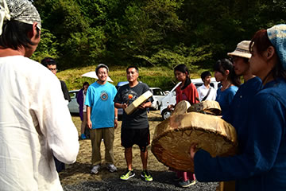 |

|
| 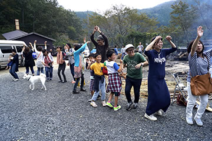 | 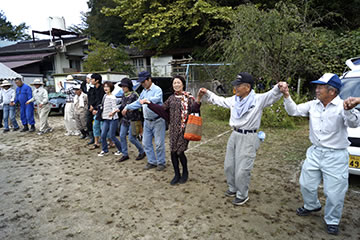 |

|

|
| （画像をクリックで拡大します） | |
=∴=∵=∴=∵=∴=∵=∴=∵=∴=∵=∴=∵=∴=∵=∴=∵=∴=∵=∴=∵=∴=∵=∴=∵=∴=∵=∴=
《太鼓パフォーマンスで縄文野焼きを盛り上げる！》
瀬戸内市の赤田龍太郎太鼓集団が彼自作のシャーマニックドラムを手に野焼きの炎に絡みます。
炎の祭場の命の誕生を待ち望む祈りの太鼓と舞が繰り広げられました。
法螺貝やディジュリドゥーも共演しました。

|
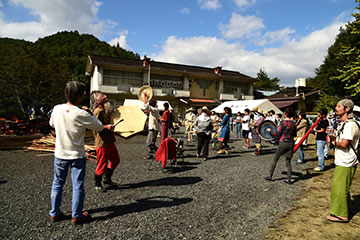 |

|
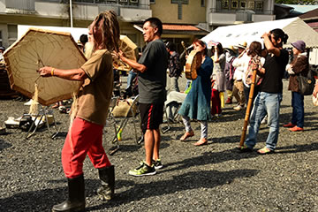 |
| （画像をクリックで拡大します） | |
=∴=∵=∴=∵=∴=∵=∴=∵=∴=∵=∴=∵=∴=∵=∴=∵=∴=∵=∴=∵=∴=∵=∴=∵=∴=∵=∴=
《ホピ×縄文ワークショップ開催される！》
縄文野焼きの余韻がまだ体中を駆けめぐる夕方、猪風来美術館第５展示室で行われました。
展示室には中心に猪風来の沖縄シリーズの「黒潮の海」「女の祭」、両側に「縄文の太陽」「縄文の月」、
奥に「大地の女神」「月の女神」があり、部屋全体が森羅万象の宇宙空間のようです。
ルービン氏は霊的パワーに満ちたこの場をとても気に入り、ホピ式の祭壇を「海」の湾曲の中に作り聖なる
水を供えローソクの灯りをともしました。
輪になって座った参加者たちは何が話され行われるか気持ちを込めて見守ります。
| 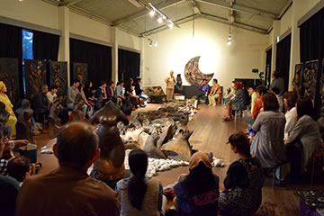 |

|
| （画像をクリックで拡大します） | |
猪風来は、縄文造形の根幹は命の根源の形「勾玉」と命を守る「縄」が組み合わさり躍動してできていること
を土器を見せながら説明。
しかもこれらは女性たちに作られたものであり、女性原理の精神世界を内包しているものであること。
また昨年訪ねたホピ族のキヴァ（地下式の祈祷所）が縄文の竪穴住居ととても似た構造をもつ「大地の子宮」
の思考であることに共通性を感じたことなどを語りました。
ルービン氏は、ホピ族は今でも母系社会であり命を産み出す女性が大切にされていること。
ホピとは生き方のことで、母なる大地の上ですべての存在と調和し生命の輪の中でつながっていることが重要
だということ。
また縄文土器の２つ口の土器に似た形をしているホピの婚礼の器を持参してくれて、その用途について説明を
いただきました。
いつまでも仲良く長く繋がりあっていけますようにという願いをこめた造形で、実用ではなく夫婦が霊的な
心の種（精子や卵子）を植え大切にするという精神的な器とのことでした。
それからホピソングを歌い、最後にルービン氏は聖水を含ませた鷲の羽で参加者全員の体そっと触れ祈りました。
ホピと縄文が根源で深く通底していることが実感できる素晴らしい場が実現でき、お互い学びあうことで現代
を生き未来を切り開いていくための叡智を見い出していけるのではないかとの予感がしました。
今回の交流に尽力してくださったアナンダラバ事務局の佐々夫妻に深く感謝いたします。
| 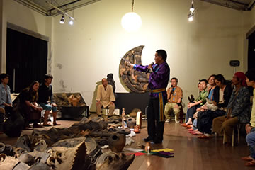 |

|

|
|
| （画像をクリックで拡大します） | |
=∴=∵=∴=∵=∴=∵=∴=∵=∴=∵=∴=∵=∴=∵=∴=∵=∴=∵=∴=∵=∴=∵=∴=∵=∴=∵=∴=
| 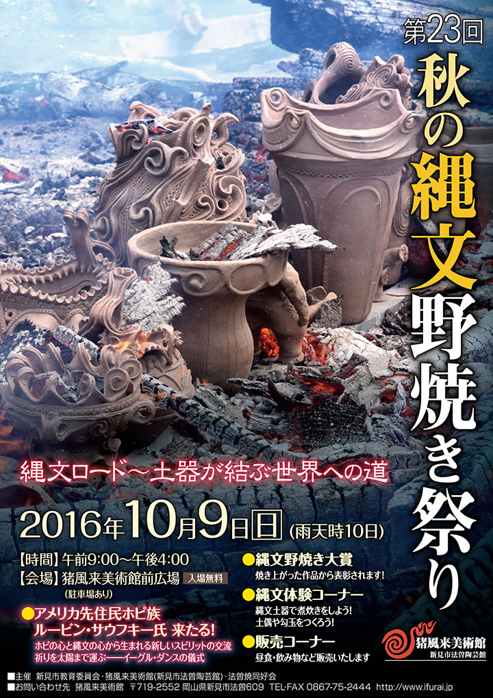 |

|
| 【「第23回 秋の縄文野焼き祭り」チラシ】 →PDF版を開く |

|
→【デンバー国際空港公式サイト（Arts of Jomon - DenverInternational）】
【出展作家（50音順）】
猪風来 Ifurai（縄文造形家）
大森準平 Junpei Omori（陶芸家）
大藪 龍二郎 Ryujiro Oyabu（陶芸家）
大山康太郎 Kotaro Ooyama a.k.a.Mon（ライブペインター／DJ）
金理有 Riyoo Kim（陶芸家）
坂巻善徳 a.k.a.sense（美術家）
小林武人 Taketo Kobayashi（3DGGデザイナー）
澁谷忠臣 Tadaomi Shibuya（グラフィックアーティスト）
篠崎裕美子 Yumiko Shinozaki（陶芸家）
竹谷隆之 Takayuki Takeya（フィギュア造形師）
堀江武史 Takeshi Horie（修復家）
片桐仁 Jin Katagiri（俳優、タレント）
丸岡和吾 Kazumichi Maruoka（髑髏作家）
村上原野 Genya Murakami（縄文造形家）
結城幸司 Koji Yuki（版画家・彫刻家）
ARTs of JOMON in 新見に引き続いて、アメリカでの現代縄文アート展の開催。
日本から15名のアーティストによる縄文造形作品などを展示しました。
→【アメリカでの縄文アート展開（ARTs of JOMON in DENVER に先駆けて）】

|
|
| 【山陽新聞 2015.09.18】 | |

|

|

|
|

|

|

|
|

|

|
今回アメリカでオープンした ARTs of JOMON in DENVER 展に先立ち、関係する縄文アーティスト８名
が渡米して、展示準備のほかコロラド州・アリゾナ州各地で縄文アートのプロジェクトや交流活動を展開し
ました。
【渡米作家（50音順）】
猪風来（縄文造形家）／大薮龍二郎（陶芸家）／大山康太郎 a.k.a. Mon（ライブペインター／DJ）／
小林武人（3DGGデザイナー）／坂巻善徳 a.k.a. sense（美術家）／篠崎裕美子（陶芸家）／
村上原野（縄文造形家）／廣川慶明（フォトグラファー）

|

|
| 【ARTs of JOMON in DENVER 展示準備作業】 | |
|
|
|
| 【山陽新聞 2015.09.18】 | |
=∴=∵=∴=∵=∴=∵=∴=∵=∴=∵=∴=∵=∴=∵=∴=∵=∴=∵=∴=∵=∴=∵=∴=∵=∴=∵=∴=
●縄文ワークショップ
（８月１５日,１６日 コロラド州ボルダー市）
ボルダー・ポッタリー・ラボ（Boulder Pottery Lab）で猪風来、大薮龍二郎、村上原野を講師として
縄文ワークショップを開催。

|

|
| 【ワークショップ見本作品の制作】 | |
| 【スライドレクチャーと縄文の道具作りワークショップ】 | |

|

|

|

|
| 【縄文造形実践ワークショップ】 | |
| 【ワークショップ参加者の方々と】 | |
猪風来、大薮龍二郎、村上原野の三人が館内で制作した作品三点を、縄文アート交流のあかしとして、
ボルダー・ポッタリー・ラボ代表のナンシー氏に寄贈しました。

|
|
| 【作品寄贈】 |
=∴=∵=∴=∵=∴=∵=∴=∵=∴=∵=∴=∵=∴=∵=∴=∵=∴=∵=∴=∵=∴=∵=∴=∵=∴=∵=∴=
●ARISE Music Festival
（８月７日～９日 コロラド州ボルダー市）
8000人が集まった音楽フェスティバルの会場ギャラリースペース横にパネルを設営、開催期間中に
sense が壁画をライブペイントを実施。
大薮龍二郎、村上原野がサポートとして参加。

|
|

|

|

|
|
| 【ARISE Music Festival 会場と壁画】 | |
=∴=∵=∴=∵=∴=∵=∴=∵=∴=∵=∴=∵=∴=∵=∴=∵=∴=∵=∴=∵=∴=∵=∴=∵=∴=∵=∴=
●Mural Project
（８月１１日～２２日 コロラド州デンバー市）
デンバー市内のチェリークリーク（Cherry Creek）で sense, Mon が壁画制作を実施。
=∴=∵=∴=∵=∴=∵=∴=∵=∴=∵=∴=∵=∴=∵=∴=∵=∴=∵=∴=∵=∴=∵=∴=∵=∴=∵=∴=
●ギャラリー壁画
（８月１７日～２２日 コロラド州デンバー国際空港）
デンバー国際空港ターミナルギャラリー内に壁画制作を実施。

|
|

|

|
| 【ギャラリー壁画制作】 | |
=∴=∵=∴=∵=∴=∵=∴=∵=∴=∵=∴=∵=∴=∵=∴=∵=∴=∵=∴=∵=∴=∵=∴=∵=∴=∵=∴=
●レセプション
（８月２０日 コロラド州デンバー市）
デンバー市内のＤＯＭＯ（日本料理レストラン）にてデンバー市のアート関係者らを招いた日本の縄文
アーティストとの交流パーティ。
およそ50名が参加。

|
|

|

|
| 【レセプション】 | |
=∴=∵=∴=∵=∴=∵=∴=∵=∴=∵=∴=∵=∴=∵=∴=∵=∴=∵=∴=∵=∴=∵=∴=∵=∴=∵=∴=
●ホピ探訪
（８月２２日，２３日 アリゾナ州ホピ・メサ）
ホピ族（ネイティブアメリカン）のルーベン氏を訪ね、猪風来、村上原野が縄文とホピの文化交流。
TEWA村で開催されたSocial Danceに参加。
ファースト・メサでホピの陶芸家ドロシー氏によるホピ式野焼きを拝見。
|
ホピのメサ内では写真撮影が禁止されています |
アリゾナ州セドナ市でホピの源流といわれるシワナ族遺跡へ行き、岩絵やボルテックスのメディスン・ホール、
“大地の子宮”などを訪れる。

|
|

|

|
| 【シナワ族の遺跡（岩絵、ボルテックスにて）】 | |
=∴=∵=∴=∵=∴=∵=∴=∵=∴=∵=∴=∵=∴=∵=∴=∵=∴=∵=∴=∵=∴=∵=∴=∵=∴=∵=∴=

|
 |
 |
| 【ARTs of JOMON in 新見 チラシ】 →PDF版を開く |
日本列島に一万五千年前より花開いた縄文文化が、近年世界から注目を集めています。
考古学での成果は縄文の実像を解き明かしつつあるとともに、その芸術としての造形美の存在を世界に知ら
しめています。
この動きは現在、絵画、彫刻、デザイン、陶芸、織物、音楽、映像、演劇、ファッションなどあらゆる領域
へと広がり、今日では縄文アートを志す多くの若き芸術家達が各ジャンルで活躍しています。
すなわち、縄文のスピリットとインスピレーションに感応して創作するアーティスト達の活動が潮流となり、
現代縄文芸術運動がいま大きく飛躍しようとしているのです。
ARTs of JOMON展は全国の主要な現代縄文アーティストが結集し、日本文化の根源である縄文スピリット
にもとづく現代縄文アート作品を展示し、全国―世界に発信するものです。
これまでに各地で展示が好評を博し、このたびメインアーティストの一人である猪風来の地元・新見市での
開催となりました。
現代縄文アートの新しい時代を拓く作家たちの作品をぜび高覧ください。
=∴=∵=∴=∵=∴=∵=∴=∵=∴=∵=∴=∵=∴=∵=∴=∵=∴=∵=∴=∵=∴=∵=∴=∵=∴=∵=∴=
■参加出品 全国の主要な縄文アーティスト（19名）
岡山県内の縄文作家（5名）
■特別展示 片桐仁作品特設コーナー
JOMO-T展（縄文をテーマにデザインしたＴシャツを展示）
メディアアート（縄文の世界観を醸成した映像作品を上映）
■公開制作 ライブペイント（縄文アーティスト3人による絵画）
6月16日（13：00 - 17：00）～17日（10：00 - 17：00）
渋谷忠臣・坂巻善徳 a.k.a sence／さかいひろこ
■オープニングセレモニー・キュレーターによる作品解説
6月18日 9：00 -
■縄文ワークショップ（各先着20名 参加費300円）
6月20日／21日 10：00 - 15：00
黒曜石のアクセサリーづくり（講師：草刈朋子）
縄文土鈴をつくろう！（講師：村上原野）
■主催 新見市・現代縄文アート展実行委員会
■企画制作 猪風来美術館・NPO法人jomonism
=∴=∵=∴=∵=∴=∵=∴=∵=∴=∵=∴=∵=∴=∵=∴=∵=∴=∵=∴=∵=∴=∵=∴=∵=∴=∵=∴=

|
|

|

|
| 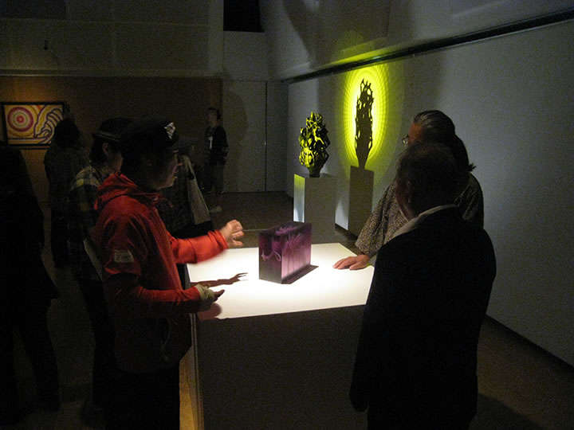 |

|
| 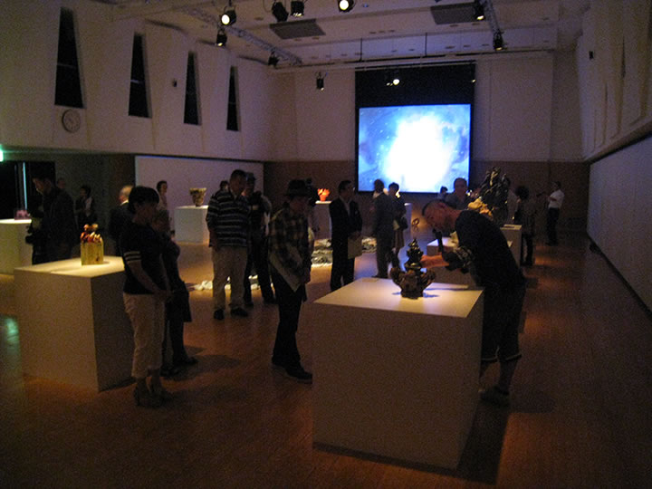 | |

|
|

|

|

|

|

|
|

|

|

|
|
| 【ARTs of JOMON in新見 会場写真】（画像をクリックで拡大します） | |

|

|
| 【ARTs of JOMON in新見 ワークショップ】（画像をクリックで拡大します） | |
=∴=∵=∴=∵=∴=∵=∴=∵=∴=∵=∴=∵=∴=∵=∴=∵=∴=∵=∴=∵=∴=∵=∴=∵=∴=∵=∴=

|

|
| 【山陽新聞 digital 2015.06.16】 （クリックで記事を開きます） |
【山陽新聞 digital 2015.06.18】 （クリックで記事を開きます） |

|
| 【山陽新聞 2015.06.23】（画像をクリックで拡大します） |

|
| 【山陽新聞 2015.05.30】（画像をクリックで拡大します） |
=∴=∵=∴=∵=∴=∵=∴=∵=∴=∵=∴=∵=∴=∵=∴=∵=∴=∵=∴=∵=∴=∵=∴=∵=∴=∵=∴=
 |
猪風来の生まれ故郷福山で初の「縄文の心と文化を語る」講演会。
福山には縄文時代中期の有名な遺跡である馬取貝塚（柳津）があります。
また、帝釈馬渡岩陰遺跡からは、縄文時代草創期（約1万5000年前）の土器が出土しており、これは
世界最古級の土器です。
備後の地にも確かに息づいている縄文の魂を呼び覚まし、“縄文の美”について語り合う心と文化の講演
となりました。
=∴=∵=∴=∵=∴=∵=∴=∵=∴=∵=∴=∵=∴=∵=∴=∵=∴=∵=∴=∵=∴=∵=∴=∵=∴=∵=∴=

|
|
| 【猪風来による、福山出土の縄文土器再現製作】 | |
■主催 古代縄文の歴史研究会
■後援 福山市教育委員会・中国新聞備後本社
山陽新聞社・(株)プレスシード
■お問い合わせ先 090-3477-9479

|
 |
| （画像をクリックで拡大します） |
数千年の時空をこえて「縄文スピリットから始まる新しい創造」の炎が、東京の縄文王国・町田の地に
燃え上がりました。
『東京町田・縄文アートフェス』ではメインイベントである「野焼きまつり」をはじめ、縄文シンポジウム
や町田の縄文遺跡を巡るツアー、縄文ワークショップといった縄文づくしの一日でした。
=∴=∵=∴=∵=∴=∵=∴=∵=∴=∵=∴=∵=∴=∵=∴=∵=∴=∵=∴=∵=∴=∵=∴=∵=∴=∵=∴=
野焼きする作品は、2月15日に集まった約40名の方々が制作した縄文土器・土偶の数々。
町田市の出土品を参考に、自由に創作した作品です。
まずは講師・猪風来が縄文造形の意味をはじめ、文様の入れ方や入魂の造形など技法をレクチャー。
そこから皆が各々の創造をふくらませてゆき、見事な縄文の作品をつくりあげました。
このほか、猪風来（猪風来美術館館長）と村上原野（同・陶芸指導員）による町田市出土の再現制作を
した土器・土偶なども一緒に焼き上げます。
=∴=∵=∴=∵=∴=∵=∴=∵=∴=∵=∴=∵=∴=∵=∴=∵=∴=∵=∴=∵=∴=∵=∴=∵=∴=∵=∴=
野焼き当日には北海道のアイヌの方々も駆け付け、猪風来らとともに火と天地の神々に祈りをささげる
縄文野焼きカムイノミをとりおこないました。
炎に向きあっての大自然への祈りの儀は、野焼きと祭事の本質をあらわす象徴的なシーンでもありました。
東京藝術大学の方々も野焼きスタッフとして参加し、たくさんの人たちの力が集結します。
 |
 |
| 【数日前から野焼き場を整備する（野炉焼き）】 | |
 |
 |
| 【火入れ】 | 【カムイノミの儀】 |
| （画像をクリックで拡大します） | |
=∴=∵=∴=∵=∴=∵=∴=∵=∴=∵=∴=∵=∴=∵=∴=∵=∴=∵=∴=∵=∴=∵=∴=∵=∴=∵=∴=
 |
 |
| 【作品を火の周りに並べる】 | 【徐々に炙ってゆく】 |
 |
 |
| 【作品が熱くなってから炎の中に入れる】 | 【木を積んで炎を大きく育ててゆく】 |
朝7時から野炉の準備をはじめ、9時に火入れとカムイノミ、そこから徐々に炎を大きく育ててゆきます。
皆の制作した作品も火にあぶられて、熱が高まるとともに土色から黒、黒から赤へと次第にその色を変え
てゆきます。
 |
 |
| 【器体の色をみながら木を積む】 | 【炎が野炉を包み込むクライマックスへ！】 |
 |
 |
| 【炎の子宮が完成し、炎が大きくたちのぼる】 | 【少しずつ炎がおさまってゆく】 |
 |
 |
| 【焼き上がった作品がその姿を現す】 | |
| （画像をクリックで拡大します） | |
最後に大きな炎が町田の空へとたちのぼり、作品に新たな命が宿ります。
“やきものの原点”の力強さを居あわせたたくさんの人たちが共有した時間でした。
=∴=∵=∴=∵=∴=∵=∴=∵=∴=∵=∴=∵=∴=∵=∴=∵=∴=∵=∴=∵=∴=∵=∴=∵=∴=∵=∴=
同日には縄文シンポジウムとしてひなた村カリヨンホールで小林達雄国学院大学名誉教授、町田市の
川口正幸学芸員らによる講演や、大薮龍二郎、小林武人によるアーティトトークも行われ、立ち見が出る
ほどの盛況となりました。
また、野焼き会場では黒曜石を使ったアクセサリーやアイヌ文化などのワークショップもあり、訪れた人の
興味を引いていました。
野焼きの佳境には燃えさかる炎の前で GENZ によるバンドの演奏が催され、祭りの熱気を盛り上げました。
 |
 |
| 【黒曜石ワークショップ】 | 【アイヌワークショップ】 |
 |
|
| 【炎の前で GENZ のライブ】 | |
| （画像をクリックで拡大します） | |
このほか町田の縄文遺跡を巡るツアーなども開催され、日本列島の遙かな文化のルーツを見て、聞いて、
ふれて感じる縄文づくしの一日となりました。
=∴=∵=∴=∵=∴=∵=∴=∵=∴=∵=∴=∵=∴=∵=∴=∵=∴=∵=∴=∵=∴=∵=∴=∵=∴=∵=∴=
今年1月には東京青山のスパイラルガーデンで開催された『ARTs of JOMON 展』で現代縄文アートの新潮流
を示し、そしてこの2月の町田での縄文野焼きの実現は、縄文の古層から現代までをつらぬく縄文文化の心髄を
あきらかにする“縄文の美”の狼煙となりました。
「これは、約40年間にわたり縄文の道を邁進してきた中での、夢の実現でもありました」（猪風来）
=∴=∵=∴=∵=∴=∵=∴=∵=∴=∵=∴=∵=∴=∵=∴=∵=∴=∵=∴=∵=∴=∵=∴=∵=∴=∵=∴=
■ 問い合わせ先
（事業全般に関すること）産業労働局観光部振興課 TEL:03-5320-4768
（イベントに関すること）パシフィックコンサルタンツ株式会社 TEL:042-372-3297

|

|
| 【東京町田・縄文アートフェスチラシ】 →PDF版を開く |

|

|
| 猪風来（土偶を制作） | 村上原野（土器づくり） |


|
芸術新潮２０１４年７月号で、猪風来美術館と春の縄文野焼き祭りを取り上げた『現代の縄文土器を野で焼く
猪風来の豊饒世界』が掲載されました。
空にたちのぼる炎が縄文土器に生命を宿す、縄文の真髄である野焼き。
そこに体現される猪風来縄文スパイラルのゆたかな造形美と精神世界に迫る。
縄文野焼きの一部始終を目撃し作品が生まれ出る瞬間に立ち会った記者の綴るルポルタージュです。
文：草刈朋子 写真：廣川慶明
=∴=∵=∴=∵=∴=∵=∴=∵=∴=∵=∴=∵=∴=∵=∴=∵=∴=∵=∴=∵=∴=∵=∴=∵=∴=∵=∴=

|

|
縄文造形家であり縄文赤漆研究家である猪風来は、国宝である中空土偶（函館市著保内野遺跡出土）の
赤漆塗装の解明に取り組んできました。
その成果を纏めた論文【「国宝土偶」（中空土偶）の漆塗装と縄文の赤漆に関する実験考古学的研究】が、
このたび函館市の公募事業「平成25年度 縄文文化特別研究」として発表されました。
現在、函館市縄文文化交流センターの公式ページで公開されております。

|

|
国宝である中空土偶（函館市著保内野遺跡出土）には、本来黒漆と赤漆が塗装されていましたが、漆はわずか
しか残存せず、ほとんど剥がれた状態で出土しました。
この剥離した漆塗装は、あえて剥離を前提として（祭式のために）計画的に塗装されたものである、という説
が提唱されていました。
このことが「縄文土偶祭式の不思議」として、考古学的な解明が求められてきました。
また、赤漆に用いられた赤土ベンガラにも謎がありました。
縄文時代に赤土ベンガラがどのような技法で生産されていたのか、これまで多くの考古学者が再現を試み
ながらも明確な実証に至らず、課題とされてきました。
こうした“縄文の赤”の美の秘密を解明する、縄文の技法による再現がはじめて成功をおさめました。
論文では、猪風来による成果の詳細な経過と結果が纏められています。
縄文赤土ベンガラの生産実験においては、岡山県吹屋で採取された天然黄土を、縄文野焼きで1000℃焼成
することによって、高純度のベンガラ（酸化鉄(Ⅲ)・酸化第二鉄）の精製に成功。
また、生産した赤土ベンガラと生漆（備中漆）を混合した赤漆を用いた赤漆塗縄文土器の作成に成功しました。
これは、天然原料と縄文の技法を徹底した実験考古学的成果の確立となります。
中空土偶の漆塗装の計画的剥離実験においても、縄文時代に存在しうる塗装技術の追求によって、剥離状況の
再現実験に成功。
縄文人の土偶をもちいた祭式儀礼を解明する端緒を開きました。
こうした成果は、縄文時代の赤漆の「心と技」を解明する考古学上の大きな手がかりを提示するものです。